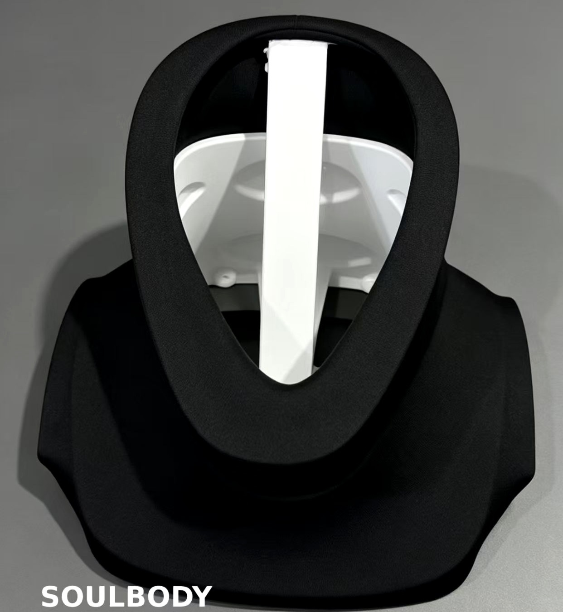
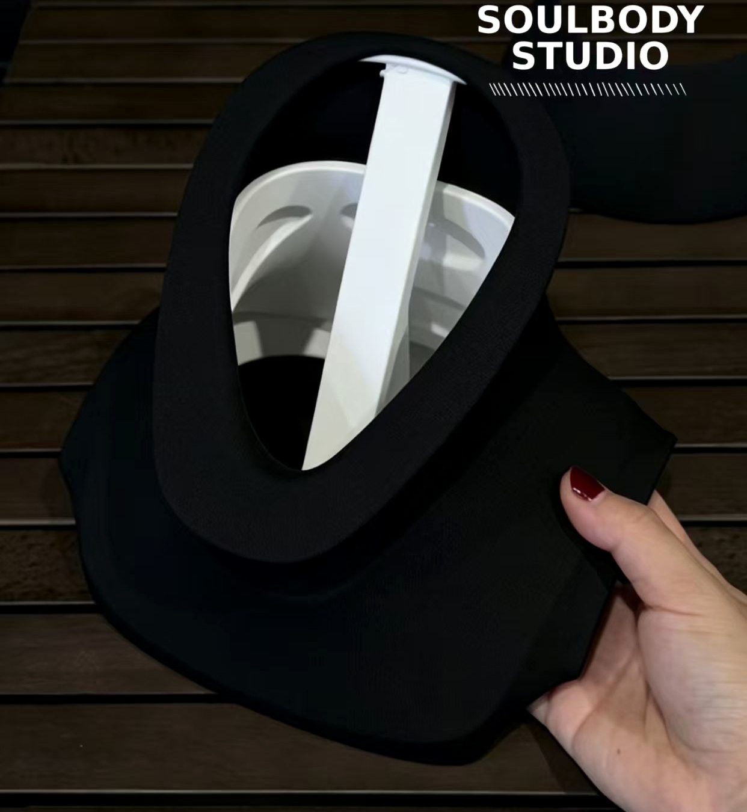
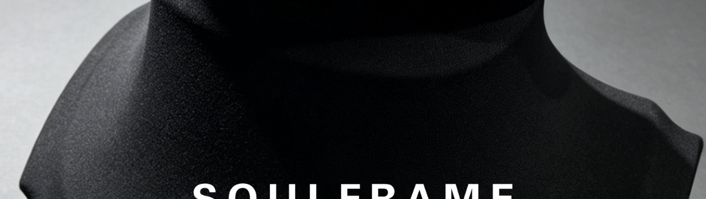

02 / ZONED COVER
Zoned Neck and Shoulder Covering
The neck opening, transition and shoulder coverage are developed as independent zones around robot geometry and motion clearance.


Design features
Neck contourAn independent ring follows the head and neck boundary.
Smooth transitionConnects the neck opening to the shoulder surface.
Motion clearanceAdjusted around rotation, assembly and maintenance access.
Visual optionsZone proportions, color, texture and branding.
Start with neck dimensions
Images, physical samples and 3D data are also accepted.
Request assessment